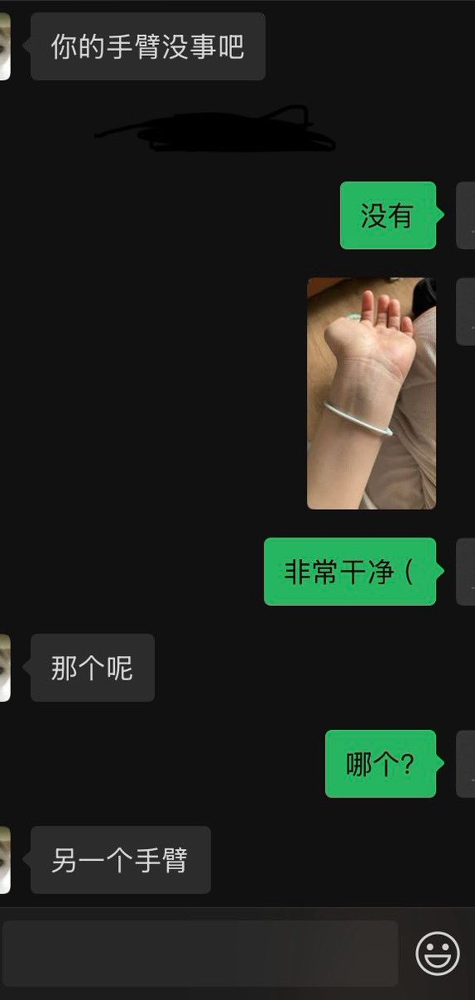
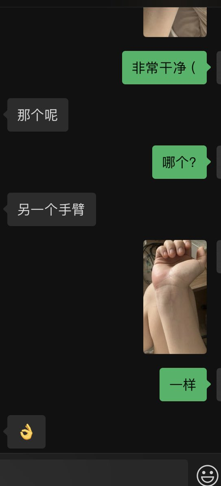
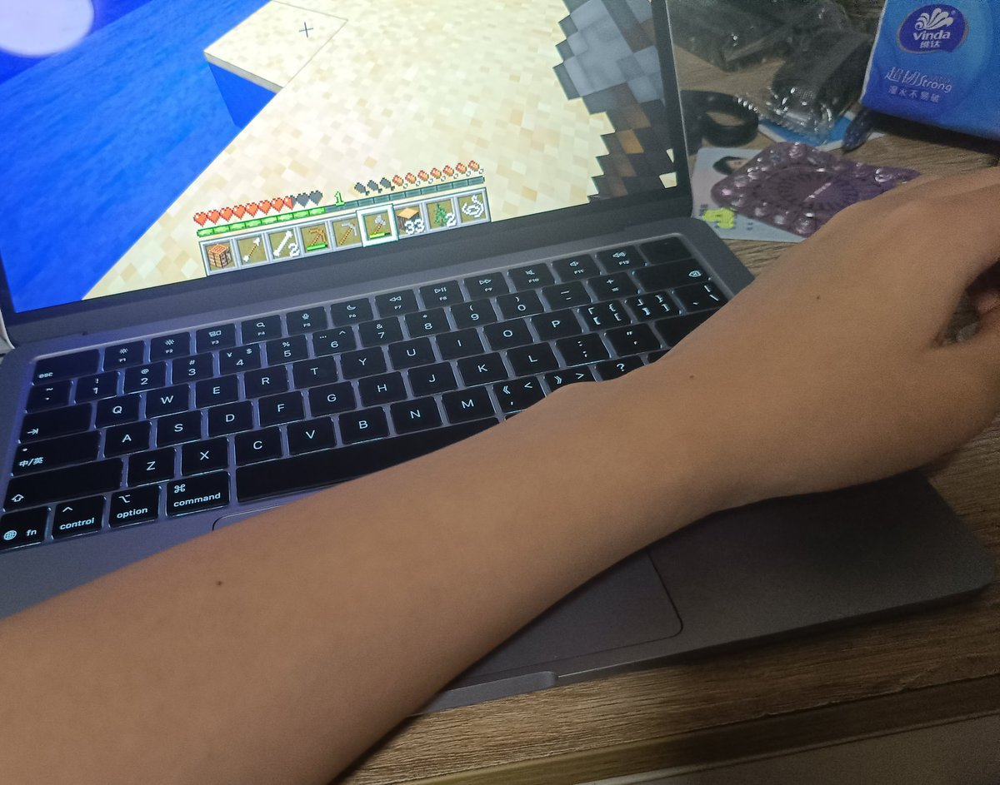

北雁冬翼（simone luxem）🏳️⚧️🏳️🌈🔬
@Simone_Luxem
说起来之前在我妈暴论一通“手术在身上开刀所以不好”之后，我一气之下给她发了个同类划手的血图，和她说“这刀手术不手术都会划在身上的，你觉得哪个好”…
然后似乎成功（暂时）说服了她，以及与此同时把她吓到了，紧接着就要看我的手腕…



📦Acbox
@AcboxLiu
我也是👍 https://t.co/NtCb12BRjh https://t.co/wjdybQPjyB